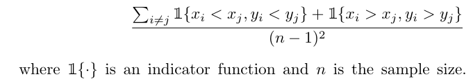
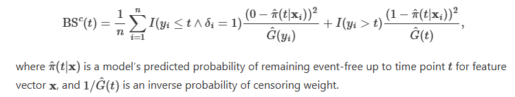
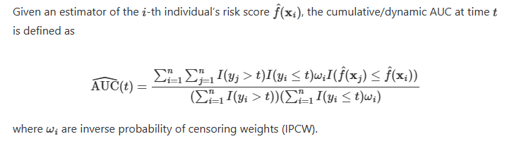
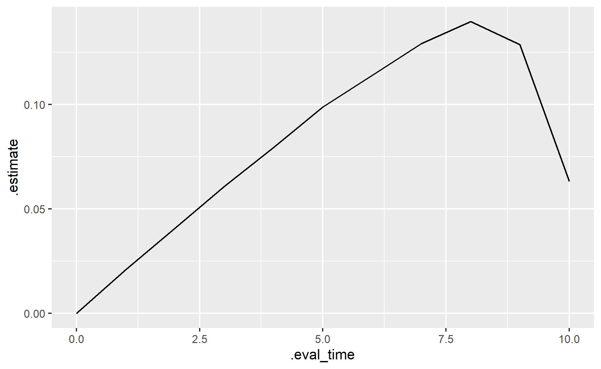
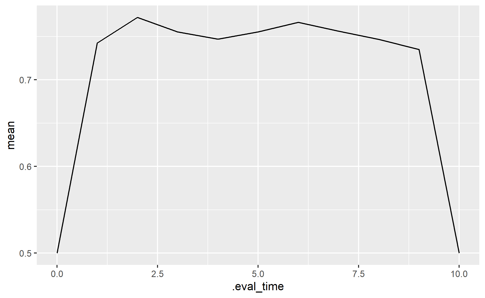
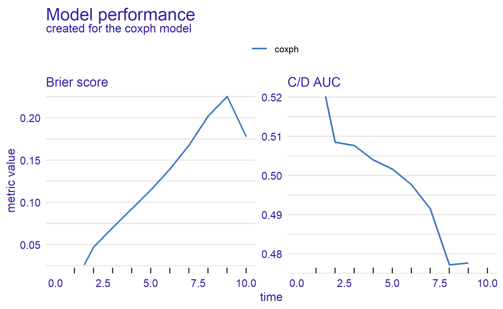
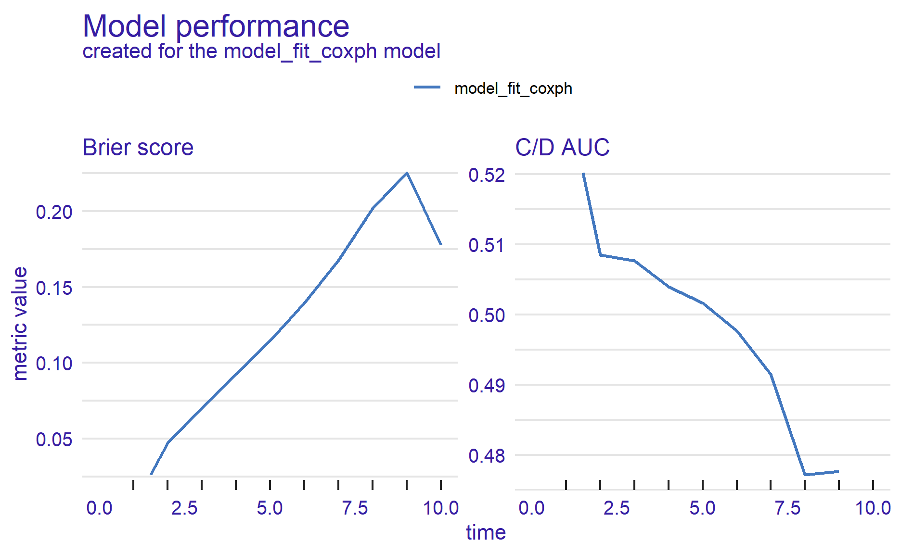
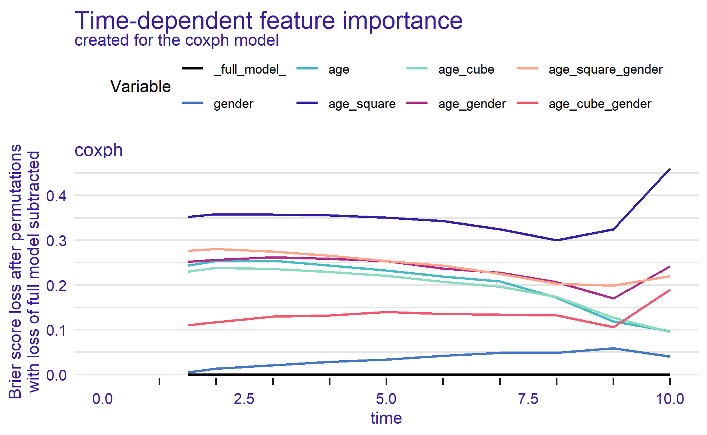

How do you survival a fall without a parachute? Just like any other season
In this post, I will be looking at how to perform model performance on survival models.
Photo by Bastien Hervé on Unsplash
Below are some of the common performance metrics we will use:
Concordance Index
Brier Score
ROC AUC Curve
Cumulative Dynamic UAC
One of the common performance metrics used in evaluating survival models is the concordance index.

Taken from this website
(Hvitfeldt) explained that the two observations are comparable if:
Both of the observations experienced an event (at different times), or
The observation with the shorter observed survival time experienced an event, in which case the event-free subject “outlived” the other.
A pair is not comparable if they experienced events at the same time.
Following are the interpretations of the model result:
1: The model can differentiate the risks perfectly
0.5: The model with random orderings of risk scores
Some of the issues of the Concordance Index (Nicholas et al. 2023):
Concordance Index is insensitive to the addition of new predictors in a model, even if the new predictors are statistically and clinically significant
Model with inaccurate predictions can have C-indices that are much larger than those from a competing model with more accurate predictions
If the populations with mostly low risk subjects, the C-index computation involves many comparisons of two low-risk patients with similar risk probabilities, which may not be the interest of the user
Unable to show sensitivity and specificity
Brier score is one of the performance metrics for classification problems.
It can be extended to the right censored data:

Taken from this website
Note that this performance metric does not work on models that cannot produce survival functions (e.g., survival support vector machine).
For this score, a perfect model has a score of zero, while an uninformative model would have a score of around 1/4.
This performance metric calculates the predicted survival probabilities that correspond to different time points.
In short, this is the same as AUC, except we are measuring the cumulative events under Cumulative Dynamic AUC.

Taken from this website
In this demonstration, I will be using this bank dataset from Kaggle.
First, I will load the necessary packages into the environment.
pacman::p_load(tidyverse, tidymodels, censored, lubridate, janitor, survival, survminer, survex, yardstick)We will use survex package to measure model performance on the Cox proportional hazard model.
We also set the time points to be used in the calculations later.
time_points <- seq(0, 10, by = 1)First I will import the dataset into the environment.
df <- read_csv("https://raw.githubusercontent.com/jasperlok/my-blog/master/_posts/2022-09-10-kaplan-meier/data/Churn_Modelling.csv") %>%
clean_names() %>%
select(-c(row_number, customer_id, surname)) %>%
mutate(has_cr_card = factor(has_cr_card),
is_active_member = factor(is_active_member),
credit_score = credit_score/100,
balance = balance/10000,
estimated_salary = estimated_salary/10000) %>%
filter(tenure > 0) %>%
mutate(age_square = age ^ 2
,age_cube = age ^ 3
,age_gender = age * if_else(gender == "Male", 1, 0)
,age_square_gender = age_square * if_else(gender == "Male", 1, 0)
,age_cube_gender = age_cube * if_else(gender == "Male", 1, 0)
,target = Surv(tenure, exited)) %>%
select(-c(tenure, exited))yardstick packageFirst I will build a Cox proportional hazard model.
df_splits <- initial_validation_split(df)
cox_recipe <- recipe(
target ~ .,
data = training(df_splits))
cox_specs <-
proportional_hazards() %>%
set_engine("survival") %>%
set_mode("censored regression")
cox_wf <-
workflow() %>%
add_recipe(cox_recipe) %>%
add_model(cox_specs)Once the information is defined, we can proceed and fit the model.
cox_fit <-
cox_wf %>%
fit(data = training(df_splits))Then we can generate the predictions from the model.
cox_pred <-
cox_fit %>%
augment(validation(df_splits), eval_time = time_points)Then we can use the model performance functions from yardstick package.
cox_pred %>%
brier_survival(truth = target, .pred)# A tibble: 11 × 4
.metric .estimator .eval_time .estimate
<chr> <chr> <dbl> <dbl>
1 brier_survival standard 0 0
2 brier_survival standard 1 0.0210
3 brier_survival standard 2 0.0408
4 brier_survival standard 3 0.0608
5 brier_survival standard 4 0.0794
6 brier_survival standard 5 0.0987
7 brier_survival standard 6 0.114
8 brier_survival standard 7 0.129
9 brier_survival standard 8 0.140
10 brier_survival standard 9 0.129
11 brier_survival standard 10 0.0631We can pass the result to ggplot function to visualize the result.
cox_pred %>%
brier_survival(truth = target, .pred) %>%
ggplot(aes(.eval_time, .estimate)) +
geom_line()
We could calculate the Concordance Index by using concordance_survival function.
cox_pred %>%
concordance_survival(truth = target
,estimate = .pred_time)# A tibble: 1 × 3
.metric .estimator .estimate
<chr> <chr> <dbl>
1 concordance_survival standard 0.766Based on the result, the model performance deteriorates over time and peaks between time points 7 and 8 before starting to improve again.
Alternatively, if we want to compute a few performance metrics, we could use metric_set and fit_resamples functions to do so.
# define all the performance metrics to be computed
survival_metrics <- metric_set(brier_survival_integrated, brier_survival,
roc_auc_survival, concordance_survival)
# fit the model
cox_res <- fit_resamples(
cox_wf,
resamples = validation_set(df_splits),
metrics = survival_metrics,
eval_time = time_points,
control = control_resamples(save_pred = TRUE)
)To collect the model performance, we need to pass the fitted object into collect_metrics function.
collect_metrics(cox_res)# A tibble: 24 × 7
.metric .estimator .eval_time mean n std_err .config
<chr> <chr> <dbl> <dbl> <int> <dbl> <chr>
1 brier_survival standard 0 0 1 NA Prepro…
2 roc_auc_survival standard 0 0.5 1 NA Prepro…
3 brier_survival standard 1 0.0210 1 NA Prepro…
4 roc_auc_survival standard 1 0.743 1 NA Prepro…
5 brier_survival standard 2 0.0408 1 NA Prepro…
6 roc_auc_survival standard 2 0.772 1 NA Prepro…
7 brier_survival standard 3 0.0608 1 NA Prepro…
8 roc_auc_survival standard 3 0.755 1 NA Prepro…
9 brier_survival standard 4 0.0794 1 NA Prepro…
10 roc_auc_survival standard 4 0.747 1 NA Prepro…
# ℹ 14 more rowsWe could even pass the model performance to ggplot function to visualize the results.
collect_metrics(cox_res) %>%
filter(.metric == "roc_auc_survival") %>%
ggplot(aes(.eval_time, mean)) +
geom_line()
survex packageAlternatively, we could use survex package to measure the model performance.
At the point of writing, survex package only supports models from the following packages:
mlr3proba
censored
ranger
randomForestSRC
survival
In this demonstration, I will first build a Cox Proportional Hazard model by using cox function.
cox_model <- coxph(target ~ .,
data = training(df_splits),
model=TRUE,
x = TRUE)
summary(cox_model)Call:
coxph(formula = target ~ ., data = training(df_splits), model = TRUE,
x = TRUE)
n= 5752, number of events= 1167
coef exp(coef) se(coef) z Pr(>|z|)
credit_score -5.874e-02 9.430e-01 3.014e-02 -1.949 0.05133
geographyGermany 5.123e-01 1.669e+00 7.246e-02 7.070 1.55e-12
geographySpain 1.271e-01 1.136e+00 7.948e-02 1.599 0.10975
genderMale 1.568e+00 4.799e+00 2.818e+00 0.557 0.57785
age -4.822e-01 6.174e-01 1.178e-01 -4.092 4.28e-05
balance 1.603e-02 1.016e+00 5.771e-03 2.777 0.00548
num_of_products -4.360e-02 9.573e-01 4.810e-02 -0.906 0.36479
has_cr_card1 -3.104e-02 9.694e-01 6.425e-02 -0.483 0.62898
is_active_member1 -6.516e-01 5.212e-01 6.209e-02 -10.495 < 2e-16
estimated_salary -4.229e-04 9.996e-01 5.080e-03 -0.083 0.93366
age_square 1.383e-02 1.014e+00 2.638e-03 5.242 1.59e-07
age_cube -1.106e-04 9.999e-01 1.906e-05 -5.803 6.53e-09
age_gender -2.117e-01 8.092e-01 1.980e-01 -1.069 0.28504
age_square_gender 6.206e-03 1.006e+00 4.500e-03 1.379 0.16789
age_cube_gender -5.370e-05 9.999e-01 3.308e-05 -1.623 0.10452
credit_score .
geographyGermany ***
geographySpain
genderMale
age ***
balance **
num_of_products
has_cr_card1
is_active_member1 ***
estimated_salary
age_square ***
age_cube ***
age_gender
age_square_gender
age_cube_gender
---
Signif. codes: 0 '***' 0.001 '**' 0.01 '*' 0.05 '.' 0.1 ' ' 1
exp(coef) exp(-coef) lower .95 upper .95
credit_score 0.9430 1.0605 0.88886 1.0003
geographyGermany 1.6691 0.5991 1.44809 1.9238
geographySpain 1.1355 0.8806 0.97174 1.3269
genderMale 4.7991 0.2084 0.01916 1202.2916
age 0.6174 1.6196 0.49010 0.7779
balance 1.0162 0.9841 1.00473 1.0277
num_of_products 0.9573 1.0446 0.87121 1.0520
has_cr_card1 0.9694 1.0315 0.85473 1.0995
is_active_member1 0.5212 1.9187 0.46147 0.5886
estimated_salary 0.9996 1.0004 0.98968 1.0096
age_square 1.0139 0.9863 1.00870 1.0192
age_cube 0.9999 1.0001 0.99985 0.9999
age_gender 0.8092 1.2358 0.54889 1.1930
age_square_gender 1.0062 0.9938 0.99739 1.0151
age_cube_gender 0.9999 1.0001 0.99988 1.0000
Concordance= 0.753 (se = 0.008 )
Likelihood ratio test= 918.4 on 15 df, p=<2e-16
Wald test = 541 on 15 df, p=<2e-16
Score (logrank) test = 952.2 on 15 df, p=<2e-16Then, we will pass the fitted model into explain function.
cox_explain <-
explain(cox_model)Preparation of a new explainer is initiated
-> model label : coxph ( [33m default [39m )
-> data : 5752 rows 14 cols ( extracted from the model )
-> target variable : 5752 values ( 1167 events and 4585 censored , censoring rate = 0.797 ) ( extracted from the model )
-> times : 10 unique time points , min = 1.5 , median survival time = 10 , max = 10
-> times : ( generated from y as uniformly distributed survival quantiles based on Kaplan-Meier estimator )
-> predict function : predict.coxph with type = 'risk' will be used ( [33m default [39m )
-> predict survival function : predictSurvProb.coxph will be used ( [33m default [39m )
-> predict cumulative hazard function : -log(predict_survival_function) will be used ( [33m default [39m )
-> model_info : package survival , ver. 3.5.8 , task survival ( [33m default [39m )
A new explainer has been created! After that, we will compute the model performance.
cox_perform <- model_performance(cox_explain)We could visualize the result by plotting the results.
plot(cox_perform)
In general, both performance metrics show the same picture, i.e., the model deteriorates across the time points.
If we want to extract the calculated model performance, we can use the following formula:
# Brier Score
brier_score(cox_explain$y
,cox_explain$times
,cox_explain$predict_survival_function(cox_model
,cox_explain$data
,cox_explain$times)) [1] 0.02603667 0.04707600 0.07020189 0.09250171 0.11470390 0.13947181
[7] 0.16772518 0.20171979 0.22545071 0.17769927# CD AUC Curve
cd_auc(y = cox_explain$y
,times = cox_explain$times
,surv = cox_explain$predict_survival_function(cox_model
,cox_explain$data
,cox_explain$times)) [1] 0.5202218 0.5084920 0.5076368 0.5039808 0.5016500 0.4976865
[7] 0.4915127 0.4771385 0.4776436 NaNAs mentioned above, the functions also work for fitted models from censored package. Below is the demonstration:
# create explainer object
cox_explain_tidym <-
explain(cox_fit$fit$fit
,data = training(df_splits)
,y = training(df_splits)$target)Preparation of a new explainer is initiated
-> model label : model_fit_coxph ( [33m default [39m )
-> data : 5752 rows 15 cols
-> data : tibble converted into a data.frame
-> target variable : 5752 values ( 1167 events and 4585 censored )
-> times : 10 unique time points , min = 1.5 , median survival time = 10 , max = 10
-> times : ( generated from y as uniformly distributed survival quantiles based on Kaplan-Meier estimator )
-> predict function : predict.model_fit with type = 'linear_pred' will be used ( [33m default [39m )
-> predict survival function : predict.model_fit with type = 'survival' will be used ( [33m default [39m )
-> predict cumulative hazard function : -log(predict_survival_function) will be used ( [33m default [39m )
-> model_info : package parsnip , ver. 1.2.1 , task survival ( [33m default [39m )
A new explainer has been created! # compute model performance
cox_perform_tidym <- model_performance(cox_explain_tidym)
# plot the results
plot(cox_perform_tidym)
I also noted survex package also offers functions to show the relative importance of the variable.
cox_parts <-
model_parts(cox_explain)To visualize the result, we just need to pass the info into plot function.
plot(cox_parts)
As shown above, age square is the most important variable.
That’s all for the day!
Thanks for reading the post until the end.
Feel free to contact me through email or LinkedIn if you have any suggestions on future topics to share.
Refer to this link for the blog disclaimer.
Till next time, happy learning!
Photo by Elena Mozhvilo on Unsplash